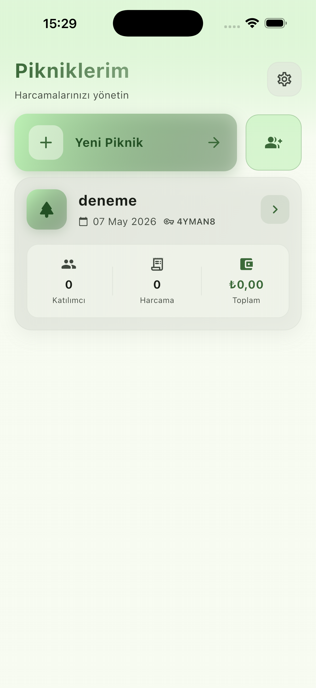
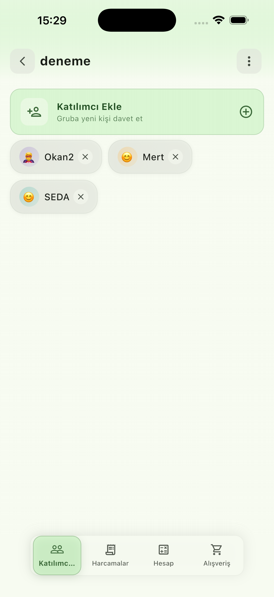
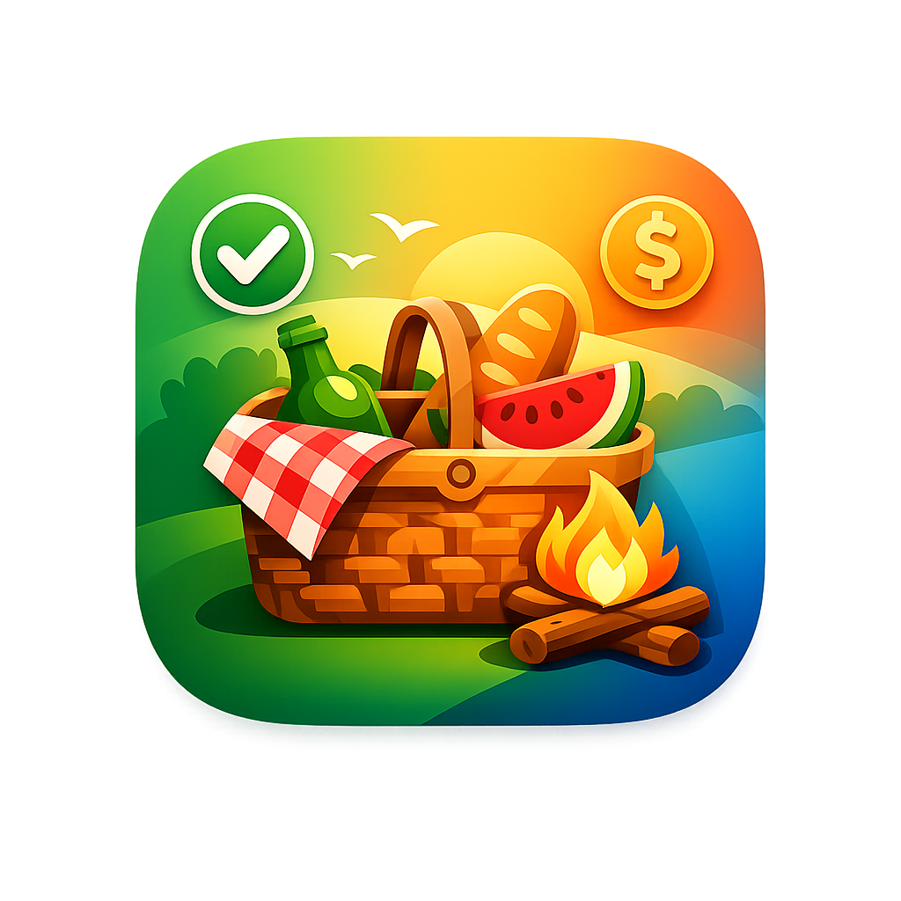

Projeler
Mukemmel piknik,
Acik Hava Planlama
Mukemmel piknik,
zahmetsiz planla.
Piknik ve acik hava etkinliklerini kolayca planla ve organize et.
Picnic; konuk listesi, malzeme kontrol listesi, butce ve zaman planlamasi ile piknik ve acik hava etkinliklerini duzenlemeyi basitlestiren kullanici dostu bir uygulamadir.
24°Gunesli · Ideal piknik havasi
Malzemeler 8/10
Konuklar 6 kisi
Belgrad Ormani 11:00
Ozellikler
Planlamayi keyfe cevir
Konuk listesinden butceye, malzemelerden hava durumuna kadar etkinligini kolaylastiran araclar.
Piknik Plani
Etkinligini adim adim olustur ve duzenle.
Konuk Listesi
Kimlerin gelecegini yonet, davetiye gonder.
Malzeme Listesi
Yiyecek ve malzeme kontrol listesiyle hicbir seyi unutma.
Butce Takibi
Harcamalari izle, butcede kal.
Harita & Konum
Piknik yerini haritada sec ve paylas.
Hava Durumu Uyarilari
Etkinlik gununun havasini onceden gor.
Arayuz
Uygulamadan gorunumler




Picnic cok yakinda!
Acik hava etkinliklerini kolaylastiracak Picnic uzerinde calisiyoruz. Gelismelerden haberdar olmak icin bizimle iletisimde kal.
Haberdar Ol